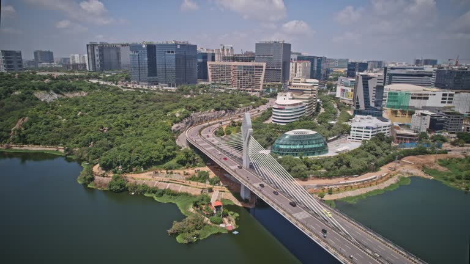
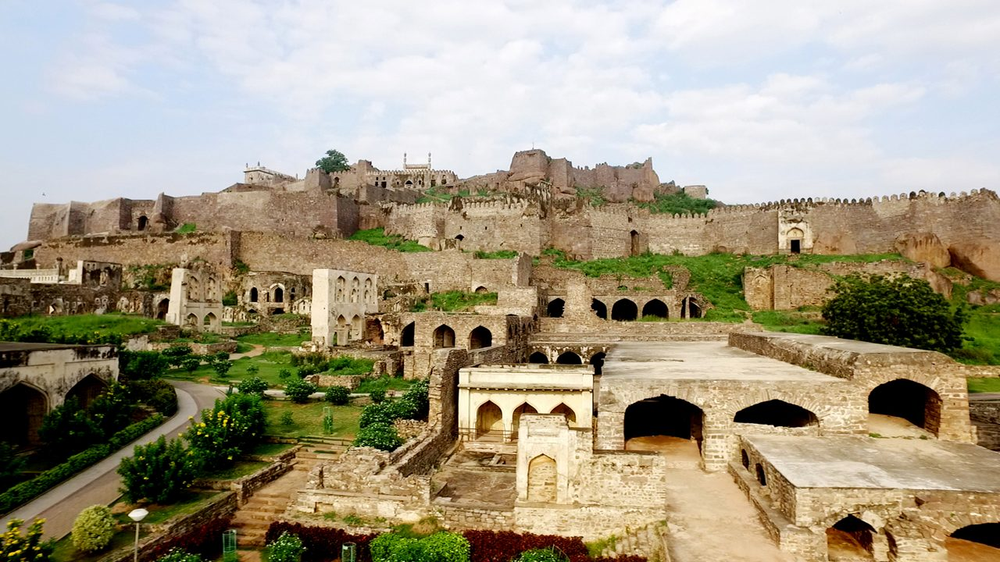

Hyderabad was founded in 1591 by Muhammad Quli Qutb Shah, the fifth sultan of the Qutb Shahi dynasty.
The city was established on the banks of the Musi River as a symbol of architectural grandeur and cultural harmony.
Its most iconic landmark, the Charminar, was constructed during this time, representing the heart of the old city.

HITEC City
HITEC City (Hyderabad Information Technology and Engineering Consultancy City) is a major IT hub, housing top multinational companies like Microsoft, Google, and Facebook. It’s home to sleek office buildings, tech parks, and innovation centers, making it a key player in India's tech landscape.

Modern Heritage
With its unique blend of Hindu and Islamic traditions, Hyderabad remains a cultural melting pot.
From historic sites like Golconda Fort to the delicious Hyderabadi Biryani, the city is a vibrant expression of centuries-old heritage.